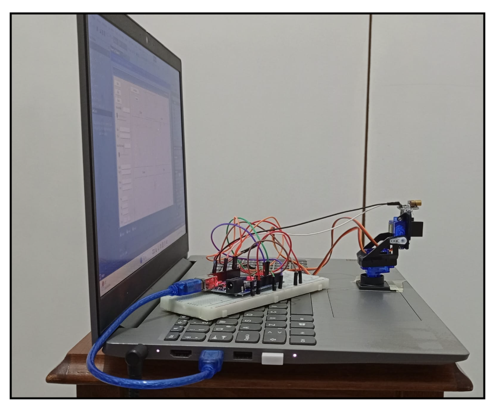
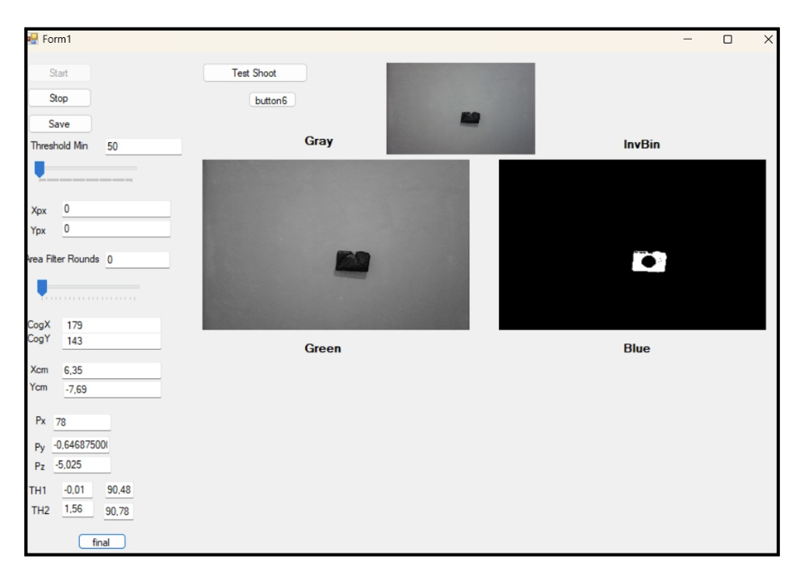

Vision-Based Autonomous Laser Tracking & Pan-Tilt Targeting System
Executive Summary
Bu proje; bilgisayarlı görü (Computer Vision), analitik ters kinematik modelleme ve gömülü donanım kontrolünü entegre eden otonom bir 2-eksenli (Pan-Tilt) elektro-optik hedefleme sistemidir. C# Windows Forms ve Emgu CV (OpenCV) altyapısıyla geliştirilen masaüstü yazılımı, kamera akışındaki hedefleri gerçek zamanlı segmente eder, ağırlık merkezini çıkarır, metrik koordinatları servo motor açılarına dönüştürür ve UART protokolü üzerinden Arduino Uno kontrolündeki lazer taretine fiziksel kilitlenme sağlar.
Hardware & System Overview

Fiziksel 2-DOF Pan-Tilt Lazer Tareti ve Arduino Uno Donanım Mimarisi

C# Emgu CV Operatör Arayüzü, Görüntü Kanalları ve Açı Hesaplama Paneli
The Challenge
Görüntü tabanlı robotik yönlendirme sistemlerindeki temel zorluk, 2 boyutlu piksel düzlemi ile robotun 3 boyutlu fiziksel çalışma uzayı arasındaki uzamsal dönüşümün milisaniyeler içinde hatasız tamamlanmasıdır. Ortam parazitlerine karşı gürültü filtreleme, kameranın optik merkezine göre ofset telafisi ve mekanik servoların açısal sınırlarına uygun analitik kinematik hesaplamaların gecikmesiz çalışması gerekmektedir.
Methodology & System Architecture
Sistem, Görüntü İşleme Hattı, Kinematik Motor ve Gömülü İletişim Protokolü olmak üzere üç ana katmandan oluşmaktadır:
- Görüntü İşleme Hattı (Emgu CV & Custom Erosion): Kamera akışından alınan kareler gri seviyeye (Grayscale) dönüştürülür. Eşikleme kaydırma çubuğu üzerinden dinamik ters ikili maskeleme (ThresholdBinaryInv) uygulanır. Parazit pikselleri temizlemek amacıyla komşuluk matrislerini doğrudan tarayan özel bir morfolojik aşındırma (Corrosion) fonksiyonu uygulanmıştır.
- Uzamsal Dönüşüm ve Ağırlık Merkezi (COG): İkili maske üzerinden sıfırıncı ve birinci derece momentler (m00, m10, m01) hesaplanarak ağırlık merkezi (Center of Gravity) tespit edilmiştir. Optik merkez ofsetleri ve uzaklık ölçekleme katsayısı (Scale = Dist / 365) kullanılarak piksel değerleri fiziksel çalışma uzayına (Xcm, Ycm) aktarılmıştır.
- 2-DOF Analitik Ters Kinematik: Mekanik taretin sabit bağlantı uzunlukları (l1 = 3 cm, d1 = 4 cm) baz alınarak hedef koordinatlar trigonometrik bağıntılarla açısal servo komutlarına dönüştürülür:
θ1 = atan2(Py, Px)
Px' = Px - l1 · cos(θ1), Pz' = Pz + d1
θ2 = π - atan2(Px', Pz')
- Donanım Sınırlandırması (Clamping): Hesaplanan radyan cinsinden değerler dereceye dönüştürüldükten sonra servo motorların sınır aşımına uğramasını önlemek adına [0°, 180°] aralığına kenetlenmiştir.
- Gömülü Haberleşme ve Güvenli Atış Döngüsü: Seri port (UART, 9600 Baud) üzerinden Arduino'ya 3 baytlık kontrol paketi iletilir:
[Th1, Th2, LaserState]. Donanımsal zamanlayıcılar (Timers) ile yönetilen durum akışı sayesinde sistem hedefe kilitlenir, 2 saniyelik kontrollü lazer darbesi tetikler ve diyot ömrünü korumak için lazeri otomatik söndürür.
Key Results
- Emgu CV ve optimize edilmiş görüntü işleme döngüsü sayesinde gerçek zamanlı hedef tespiti ve COG hesabı sıfır kare atlaması ile yürütülmüştür.
- Analitik ters kinematik motoru sayesinde hedefin çalışma uzayındaki konumu doğrudan Pan-Tilt açılarına aktarılmış ve hedef üzerinde milimetrik fiziksel kilitleme sağlanmıştır.
- C# ve Arduino arasındaki çift taraflı haberleşme hattında tampon temizleme mantığı uygulanarak seri port gecikmesi ve veri kayıpları engellenmiştir.